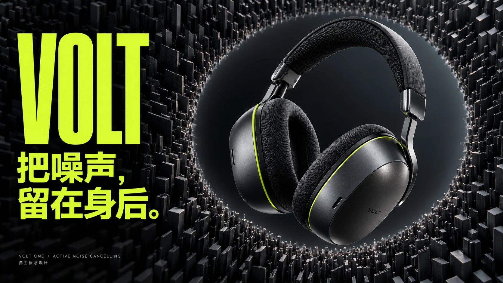
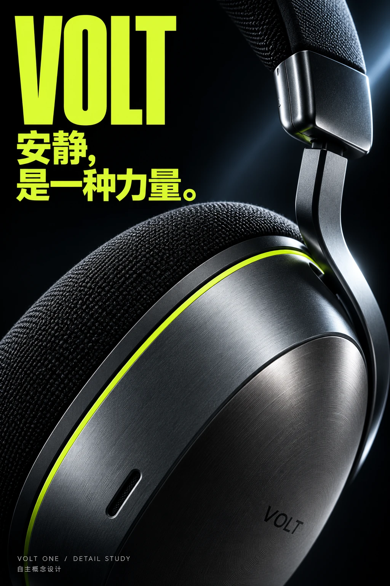
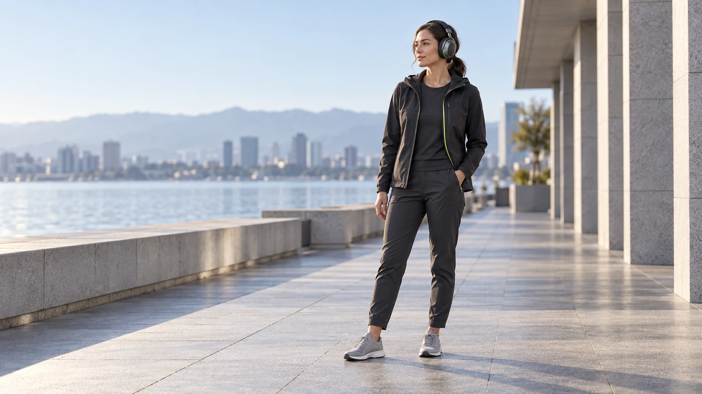

PRODUCT LAUNCH / KEY VISUAL / MOTION
VOLT / 伏特
把城市的密集噪声，转成产品周围的一圈安静。石墨、金属与一条亮绿接缝，贯穿主视觉、人物海报和材质特写。

同一产品，两种观看距离
CAMPAIGN POSTER / MATERIAL STUDY

把安静，带回日常
LIFESTYLE / NATURAL LIGHT
把安静，放进时间里
22″ / 1920 × 1080 / ORIGINAL SOUND由 AI 摄影风格静帧、独立产品图层、图形排版与原创合成声轨制作。以城市、材质、日常和产品四个镜头呈现不同使用情境。
01 / VISUAL IDEA
把声场画成边界
密集的黑色结构停在耳机周围，视觉焦点回到产品轮廓。亮绿只承担识别、标题和关键接缝。
02 / MATERIAL
由远到近，保留识别
椭圆耳罩、枪灰支架和织物头垫形成固定设计。特写延展强调接缝与不同材质的反光差异。
03 / EDITING
先建立城市，再留下安静
地铁声场收束到微距，明亮日常承接情绪，最后以完整产品和中文主张落版。